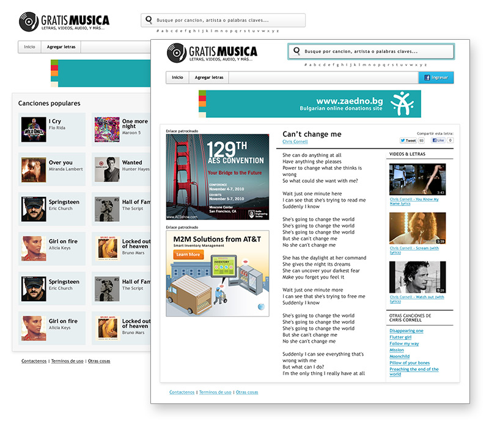

Grátis Música
Concepto, diseño, HTML & CSS. Programación: Bruno Sacco.
Existen ciertas categorías de sitios que, debido a la naturaleza del trabajo en Chena Ventures, he hecho una y otra vez a través de los años, cambiando apenas nombres, logos, colores. Por ejemplo: sitios de clasificados, sitios de juegos, sitios de peliculas, sitios de noticias, sitios con letras de canciones. Este sitio es un ejemplo, uno de los más decentes, de esta última categoría.
La idea era hacer algo sencillo, ordenado, legible y sobrio. Creo que el resultado fue aceptable, o al menos lo sería si no tuviera todos esos banners. Creo recordar que se terminó usando el diseño para otro dominio.
